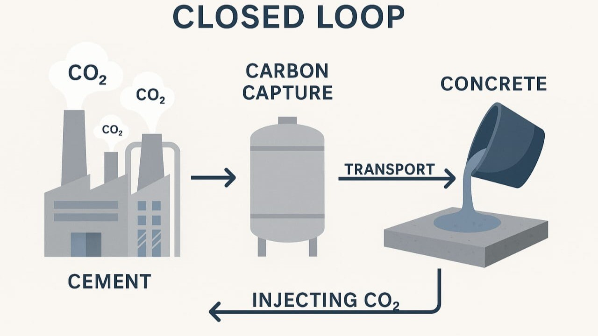
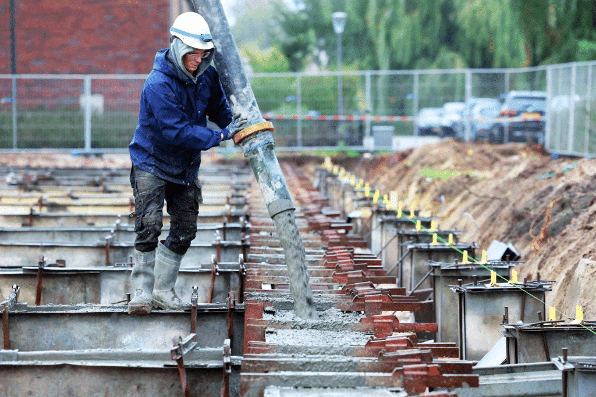

About This Episode
We analyse the environmental impact of concrete production and explain why it has become a major global sustainability challenge. Concrete is one of the most widely used materials in construction, yet its production is responsible for significant carbon emissions and resource consumption. We examine how concrete recycling and green concrete technologies can contribute to a more sustainable construction industry. In addition, we explore international approaches and recent scientific developments that aim to reduce waste, improve material performance, and lower CO₂ emissions.


Why This Topic Matters Globally
<> Concrete is one of the most widely used materials in the world, but it also has a significant environmental impact. Cement production alone is responsible for approximately 7–8% of global CO₂ emissions . At the same time, increasing urbanisation and population growth continue to drive demand for new infrastructure, which intensifies resource depletion and environmental pressure. For this reason, developing sustainable alternatives such as recycled concrete and green technologies is essential for achieving a circular economy in the construction sector.

Key Topics
-
Environmental impact of concrete production
-
CO₂ emissions from cement
-
Concrete recycling and circular economy
-
International approaches (Netherlands, Japan, Denmark)
-
Technical challenges (porosity and strength)
-
Innovative solutions (slag, carbon capture)
-
Green concrete and sustainable technologies
.webp)

Transcript
Hello everyone and welcome to our podcast. We are Group 5. Today, we will take a look at the construction industry's environmental footprint. Concrete is arguably the most essential material in modern infrastructure; nevertheless, we must examine the massive ecological cost of its production. Personally, I found it quite eye-opening how much we rely on a material that has such a hidden impact on our climate goals.
Exactly, Mahshid. It is a complex international challenge. Our objective today is to investigate why traditional concrete is such a hurdle for sustainability and how recycling technology is evolving. We will talk you through four key areas: the carbon impact of cement, the limitations of recycling, international case studies from the Netherlands and Japan, and the future of carbon-capturing concrete.
Right. It is important to realize that this is not just a local construction issue, but a global environmental crisis. Yara is going to elaborate on the scientific research we have analysed to show us exactly where the global industry is heading, and I will try to translate these complex scientific findings into what they mean for the future of our cities.
That is a staggering comparison. This impact is not just about carbon emissions; I've also read that the raw materials we often take for granted, like sand, are becoming scarce. It seems we are facing a dual crisis: we are running out of the very ingredients needed to make concrete while simultaneously polluting the atmosphere to process them.
What many people do not realize is that the heart of this problem lies in the chemistry itself. The process of 'calcination' is the main culprit here. To produce cement, we must heat limestone, which is Calcium Carbonate, to over 1400 degrees Celsius. During this reaction, the molecule literally splits; the lime we need remains, but pure CO₂ is released directly into the atmosphere as a byproduct. These are known as 'process emissions,' and they cannot be avoided simply by switching to green energy. Furthermore, concrete production consumes enormous quantities of natural resources like fresh water and specific types of river sand, which we are pulling from ecosystems faster than they can replenish.
So we are depleting natural resources while simultaneously 'cooking' the planet. Consequently, the demand for urban expansion is directly clashing with our global climate goals.
This global pressure is why we see such diverse international strategies. It is not just a technical issue, but one tied to local culture, space availability, and economic priorities. For instance, the difference between how a flat country like the Netherlands and a mountainous, seismic area like Japan approaches this is quite fascinating.
In the Netherlands, the focus is mainly on circular reuse of aggregates — specifically reusing aggregates for road infrastructure. However, in Japan, the situation is quite different. Due to limited space and strict seismic safety requirements, they have developed advanced mechanical methods to separate old cement paste from the stone almost entirely. This ensures that recycled aggregates remain strong enough for earthquake-resistant structures.
So while the Netherlands prioritises material reuse, Japan focuses more on structural performance. This shows how local conditions shape sustainable construction strategies.
Exactly. We also see this international shift in projects such as the Soundport building in Copenhagen. In this case, the design itself was based on circular principles, meaning materials were selected with future reuse in mind. As Wu et al. (2025) explain, this reflects a broader global transition toward designing buildings for disassembly rather than demolition.
That makes sense. So instead of treating buildings as permanent structures, they are increasingly seen as material banks for future construction. But this raises an important question: if we reuse materials, why is crushing concrete not always the perfect solution?
When we produce 'recycled aggregates' by crushing demolished structures, we face a major engineering hurdle. Shomal Zadeh (2023) identified that construction waste can account for up to 80% of total waste in some regions. While there is no shortage of material, the problem is that these crushed pieces are not 'clean'; they still have old cement paste stuck to them.
This leftover paste makes the material 'porous.' You can think of it like a sponge; it is filled with microscopic holes that absorb water. When you use these porous stones in new concrete, it weakens the entire structure. The compressive strength drops and the concrete becomes less durable because it is more susceptible to freeze-thaw damage. This is why engineers are often still hesitant to use recycled concrete for load-bearing walls, limiting its use to foundations or cycling paths.
So, to clarify for our listeners: you are referring to the old cement paste that stays attached to the rocks after crushing, correct? I can imagine that this 'leftover' material significantly changes how the new concrete behaves. How exactly does that affect the overall quality and safety of a new structure?
Exactly. Because of this porous structure, the material absorbs more water, which directly reduces both strength and durability.
I see. It is almost like building with a foundation that is constantly thirsty. Nevertheless, this technical barrier is exactly where the latest innovations in Green Concrete are starting to change the game.
To stress an important point: sustainability must go hand-in-hand with performance. We are now using industrial byproducts like blast furnace slag to 'heal' those porous structures from the inside. Bai and colleagues demonstrated in 2026 that moderate amounts of slag promote the formation of C-S-H gel. That stands for Calcium-Silicate-Hydrate, and it is the 'glue' that gives concrete its strength. This gel fills those sponge-like holes and restores the material's strength chemically.
Additionally, there is the carbonation research by Shao and Sakai from 2025. They found that recycled concrete powder can actually absorb CO₂ from the air. During carbonation, the CO₂ reacts with the material to form calcium carbonate crystals, making the concrete denser and stronger. We are essentially turning a building into a carbon sink that improves because of the emissions it captures.
Using industrial waste to fix construction waste sounds like a win-win for the circular economy. It is essentially a chemical upgrade that turns a weakness into a strength. Furthermore, does this mean we could eventually see buildings that clean the air while they stand?
Indeed. Because of this, the building itself becomes a carbon sink.
It is impressive to see how deep the chemistry goes and how we can turn one of the world's biggest polluters into a tool for carbon storage. However, I wonder about the transition from the lab to the real world: how do researchers ensure that these new green materials are actually safe and reliable for massive projects? We certainly cannot take risks when it comes to the structural integrity of our built environment.
That is a vital point. To ensure safety, the scientific community follows a very strict path. Namely, John and Zordan explained in their 2001 research that developing recycled building materials requires a systematic process. This starts with analysing the chemical properties of the waste, followed by testing the physical strength of the new material, and finally evaluating the environmental impact. Therefore, we can trust that these innovations have been rigorously tested for safety.
To recap our discussion: we have analysed the staggering 7 to 8% CO₂ impact of cement production and the international strategies used to combat this, from the roads in the Netherlands to the high-tech skyscrapers in Japan. We also investigated the technical hurdle of porosity that currently limits the strength of recycled aggregates and how new research is overcoming these barriers.
Indeed. To summarize the key points, our research into Bai et al. (2026) and Shao & Sakai (2025) highlights that through slag additives and carbonation processes, we can actually transform concrete into a high-performance carbon sink. The main takeaway for our audience is that sustainable concrete is no longer a niche interest, but a fundamental necessity for a global circular economy.
In conclusion, by applying the systematic research methods described by John and Zordan, we can effectively reduce the footprint of the world we build. It requires international collaboration, but the technology is clearly there. That completes our summary. Thank you for listening!
Sources
- Bai, W., Zhang, A., Yuan, C., Guan, J., Xie, C., Lv, Y., & Li, L. (2026). Multi-scale analysis of microstructure and strength formation mechanism of recycled concrete: Considering the effects of slag admixture and aggregate type. Archives of Civil and Mechanical Engineering, 26, 60. https://doi.org/10.1007/s43452-026-01432-6
- John, V. M., & Zordan, S. E. (2001). Research and development methodology for recycling residues as building materials: A proposal. Waste Management, 21(3), 213–219. https://doi.org/10.1016/S0956-053X(00)00092-1
- Nilimaa, J. (2023). Smart materials and technologies for sustainable concrete construction. Developments in the Built Environment, 15, 100177. https://doi.org/10.1016/j.dibe.2023.100177
- Shao, Z., & Sakai, Y. (2025). Recycling recycled concrete powder into low-carbon construction material through compaction and carbonation. Resources, Conservation & Recycling, 222, 108456. https://doi.org/10.1016/j.resconrec.2025.108456
- Shomal Zadeh, S., Joushideh, N., Bahrami, B., & Niyafard, S. (2023). A review on concrete recycling. World Journal of Advanced Research and Reviews, 19(2), 784–793. https://doi.org/10.30574/wjarr.2023.19.2.1631
- Wu, J., Ye, X., & Cui, H. (2025). Recycled materials in construction: Trends, status, and future of research. Sustainability, 17, 2636. https://doi.org/10.3390/su17062636


About Us
Mahshid & Yara
HostsWe are Mahshid and Yara, second-year students in Bouwmanagement en Vastgoedontwikkeling.
This podcast was created as part of our final project for the course Internationalisering 2 – Interculturele Communicatie.
We chose this topic because sustainability in construction is becoming increasingly important worldwide, and concrete plays a major role in this challenge. Through exploring concrete recycling and green technologies, we aimed to better understand how the construction industry can move toward a more sustainable and circular future.